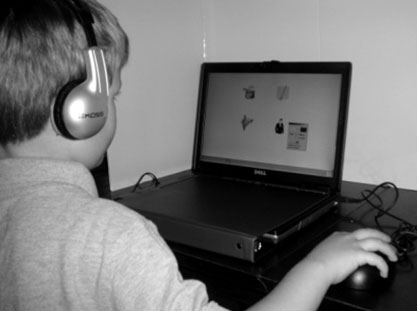
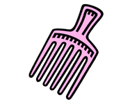
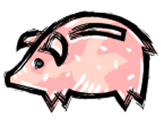

Items and Administration
Administration

The C-BAS-R project brings in its own data collectors and laptop computers for data collection. We set-up the computers and have them ready for each class before they arrive. No prior training is necessary for students to participate as the C-BAS administration is automated and self-explanatory, even for younger students. Each test is comprised of a variety of items, which include directions the students can listen to through their earphones. The tests only take approximately 20 to 30 minutes per classroom to administer. A range of 6 to 8 group administrations can be completed in a six hour day (with transitions and scheduling conflicts).
Example Items
Concepts of Print
Audio: Click on the picture that shows the front of a book
Phonological Awareness
Audio: What word do these sounds make? /p/i/g/. Click on the picture of the /p/i/g/.
|
 |
 |
Phonics
Audio: Click on the word “can.”
- can
- cat
- cup
- call
Vocabulary
Audio: Choose the best answer to finish the sentence.
I had already _____ my letter, but forgot it at home.
- age
- fold
- wrote
- written
Comprehension
Audio: Choose the best answer.
If forcing yourself to put a smile on your face can help you actually feel happier, I wonder what happens when you try to look more thoughtful in class. Do you ____ more?
- smile
- talk
- think
- listen